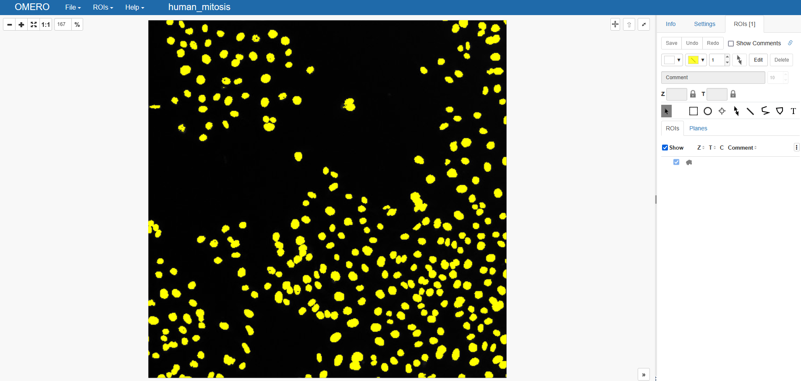
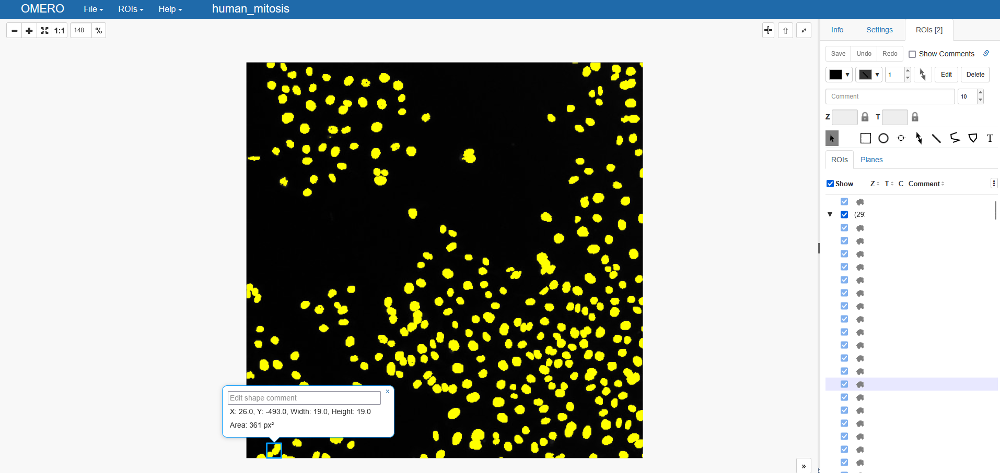
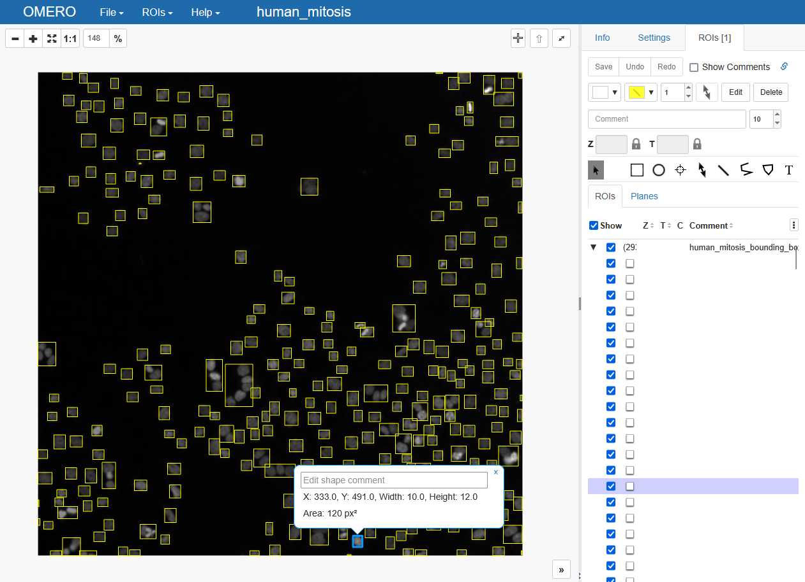

Upload ROIs (2D)#
Let’s first look at how masks for 2d binary and labels images are created and uploaded to OMERO. Credit for the code goes to Tally Lambert for their work in the napari-omero repo, from which a lot of this code is inspired. In the first part, we will use omero-py for a bit tighter control of what we are doing.
import ezomero
import omero_rois
from omero.model import RoiI
from skimage import data, measure, filters
As always, we begin by connecting to the OMERO server:
user = 'your-user'
group = 'default'
host = 'your-host'
port = 4064
secure = True
conn = ezomero.connect(host=host, port=port, group=group, user=user, password=None, secure=secure)
We may want to save to different kinds of segmentation results: Binary images or label images. Binary images contain only 0 and 1, whereas in label images, connect 1s are fused into objects which share a common, unique integer value as their identifier. Let’s cr44eate some data like this for testing purposes:
image = data.human_mitosis()
binary = image > filters.threshold_otsu(image)
labels = measure.label(binary)
We first upload the image to later attach some segmentations to it. Note that our image is a 2d image, but OMERO always expects 5D data -so we need to add some empty dimensions prior to upload. That’s what this formulation (image[None, None, None,:]) does to the image.
# we first need to upload the image:
image_id = ezomero.post_image(conn, image=image[None, None, None,:], image_name='human_mitosis', dim_order='tczyx')
image_wrapper, metadata = ezomero.get_image(conn, image_id, dim_order='tczyx')
WARNING:root:Using this function to save images to OMERO is not recommended when `transfer=ln_s` is the primary mechanism for data import on your OMERO instance. Please consult with your OMERO administrator.
print(image[None, None, None,:].shape)
(1, 1, 1, 512, 512)
Depending on whether we want to upload the segmentation as a binary image or as separate labels we need to change the upload a bit. Either way, we first create an empty ROI:
updateService = image_wrapper._conn.getUpdateService()
roi = RoiI()
Uploading a 2D binary image#
To upload a 2D binary image, we convert the binary image into a mask and add it to the created ROI-object. For this, we use the omero-rois package to turn this into OMERO-compatible ROIs. Finally, we upload:
roi.setImage(image_wrapper._obj)
binary_mask = omero_rois.mask_from_binary_image(binary)
roi.addShape(binary_mask)
# post ROI to OMERO
uploaded_binary_roi = updateService.saveAndReturnObject(roi)
And this is what we get on OMERO:

Uploading a 2D labels image#
In many cases, we want to keep track of individual objects, though. For this we use labels images in image processing. Luckily, omero-rois provides a handy function for this usecase, too. Let’s create a new, empty ROI object:
roi = RoiI()
roi.setImage(image_wrapper._obj)
mask_labels = omero_rois.masks_from_label_image(labels, raise_on_no_mask=False)
print('Number of objects: ', len(mask_labels))
Number of objects: 293
Since we are looking at multiple, separate ROIs, we need to add them to the ROI object one by one before we can upload the new ROIs:
for mask in mask_labels:
roi.addShape(mask)
uploaded_roi = updateService.saveAndReturnObject(roi)
The output on OMERO now looks slightly different. The display is exactly before, but on the right-hand side we can see that we have two ROIs now. One for the previously uploaded binary ROI (see above), and another ROI, which is actually a set of multiple ROIs. You can click on it to expand it into the individual objects and highlight them in the webviewer.

Using ezomero#
So far, what we uploaded were actual segmentation outlines - e.g., mask objects. OMERO provides more flexibility with ROIs though. For instance, ROIs can specifically be defined as rectangles, points, lines, etc. To get a bit better control over these, you may want to use the ezomero package, which provides some convenient functions to interface OMERO.
Let’s assume that we’d want to determine the bounding boxes of our detections and upload them as rectangles to OMERO, which is a usecase that’s very typical for object detection - see this tutorial on training a YOLO classifier on OMERO Rois as annotations. Let’s first get some bouding boxes using the regionprops function from scikit-image:
properties = measure.regionprops(labels)
Now, we iterate over all the detections and create a Rectangle object from each bounding box. We add all Rectangles to a list and post them to OMERO through the ezomero.post_roi function.
rectangles = []
for i, prop in enumerate(properties):
x0 = prop.bbox[1]
y0 = prop.bbox[0]
x1 = prop.bbox[3]
y1 = prop.bbox[2]
rectangle = ezomero.rois.Rectangle(x=x0, y=y0, width=x1-x0, height=y1-y0)
rectangles.append(rectangle)
roi = ezomero.post_roi(conn=conn, image_id=image_id, shapes=rectangles, name='human_mitosis_bounding_boxes')
And that’s it. Checking the result again shows a collection of rectangles in an ROI collection. Note that the ezomero.post_roi function only accepts lists of shapes, independent of whether they are Lines, Rectangles or else. Thus, this function will always generate a collection of ROIs on OMERO.
